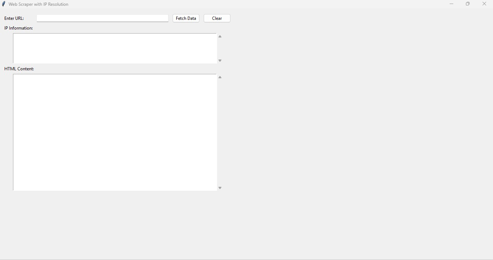

01 · Web Application 2025
Web scrapping
A web scraper is a software program that automatically collects information from websites and organizes it for storage or analysis. It works by visiting websites, reading their HTML content, extracting useful information such as names, prices, images, and descriptions, and saving the data in formats like Excel, CSV, or databases.
The problem
A web scraper solves the problem of manually collecting information from websites, saving time and effort by gathering data automatically
Technologies used
- Python Programming Language
- Beautiful Soup
- Scrapy
- Selenium